Die Dichte ist mit 5,3 g/cm³ auch nur ein wenig kleiner als die 5,5 g/cm³ der Erde. Daher hat die Venus mit einer Gravitation von 8,9 m/s² 90 % der Schwerkraft auf der Erde.
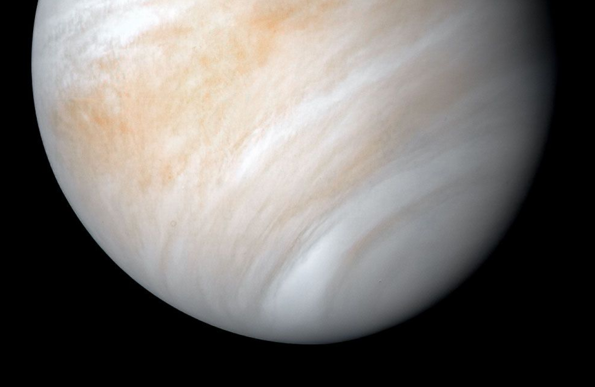
Venus
QUICK FACTS
0,72
Entfernung zur
Sonne (in
AU)
8,9
Gravitation
(in m/s²)
0
Bekannte
Monde
Physikalische Eigenschaften
Die Venus ist wegen der dicken Wolkendecke ein optisch sehr schöner und eleganter Planet, welcher sehr ruhig erscheint. Schaut man jedoch unter die Wolkendecke, will man lieber nicht dort hin.
Größe & Dichte
Die Größe und Dichte der Venus ist sehr ähnlich zur Erde, deshalb wird die Venus auch oft als unser Schwesterplanet bezeichnet. Der Durchmesser der Venus ist mit 12,100 Kilometer nur ein wenig kleiner als die 12,750 Kilometer der Erde.
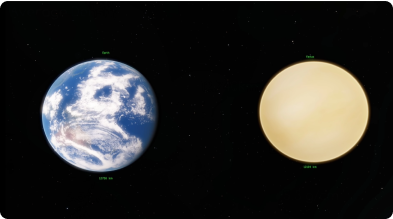
Atmosphäre
Bei der Größe und Dichte hören die Gemeinsamkeiten mit unsrem
Schwesterplanet aber schon auf. Die Atmosphäre der Venus ist
93-mal so dicht wie die der Erde und der Atmosphärendruck
entspricht mit 92
Bar
einem 900 Meter tiefen Tauchgang im Meer, genug um jemanden umzubringen.
Wenn man es schaffen würde trotz des Druckes geradezustehen und am
Leben zu bleiben, wäre der Luftwiderstand so groß, dass wenn man seine
Arme bewegen würde, es sich anfüllen würde wie schwimmen.
Oberfläche
Einige Sonden haben durch die Nutzung von Radar, um durch die Wolkendecke zu schauen, eine Karte der Oberfläche erstellen können. Dabei wurden einige interessante Oberflächenmerkmale erkundet.
- Vulkane
- Kruste
- Krater
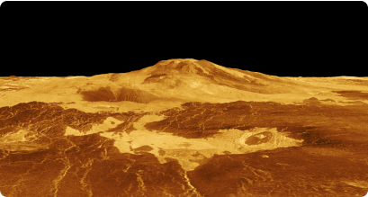
Venus hat sehr viele große, nicht unbedingt aktive, Vulkane auf der Oberfläche. Es gibt allein 167 Vulkane, die einen Durchmesser größer als 100 Kilometer haben.
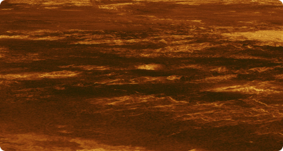
Da die Venus keine Plattentektonik hat, wird die Oberfläche nicht erwärmt und erneuert. Vor 0,5 Milliarden Jahren erhitzte sich der Mantel stark, dass er sich den Weg durch die Kruste bahnte. Dadruch sind heute 80 % der Oberfläche erkaltete Lava ebenen.
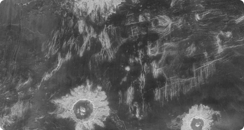
Man kann auch 900 Krater auf der Venus finden, welche aber nie kleiner als 3 Kilometer sind. Das liegt daran, dass alle Objekte kleiner als 50 Meter in der Atmosphäre verglühen würden, bevor diese den Boden erreichen.
Magnetfeld
Die Venus hat kein eigenes Magnetfeld, obwohl die Zusammensetzung des Planet ähnlich ist wie die der Erde. Ohne mehr Daten ist es schwierig zu sagen, wieso das so ist.
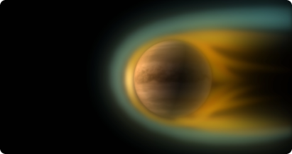
Ohne ein schützendes Magnetfeld kann der Sonnenwind Moleküle mit geringer Dichte von der Atmosphäre losreißen. Deswegen hat die Venus einen Schweif, ähnlich wie ein Komet, welcher jedoch nicht sichtbar ist.
Bedingungen
Wie ist es jetzt eigentlich auf dem Boden der Venus zu stehen?
Temperatur
Mit einer Oberflächen Temperatur von 460° ist Venus bei weitem
der heißeste Planet im Sonnensystem, sogar heiser als Merkur welcher
näher an der Sonne liegt.
Diese Hitze liegt am extremen Treibhauseffekt, auf der Erde machen wir
uns gerade viele Sorgen das der CO2 Gehalt unserer Atmosphäre von
0,04 % auf 0,06 % steigt, der
CO2 Gehalt in der
Venus Atmosphäre liegt bei 97 %.
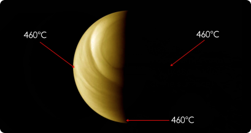
Weil die Atmosphäre die ganze Wärme speichert, bleibt die Temperatur auf der Nachtseite und sogar auf den Polen des Planeten immer gleich.
Wetter
Windgeschwindigkeiten auf der Oberfläche der Venus sind mit nur ein paar km/h sehr niedrig. Aber aufgrund der Dichte der Atmosphäre übt dieser Wind eine sehr starke Kraft Kraft auf Hindernisse aus und kann kleine Steine und Staub über die Oberfläche bewegen.
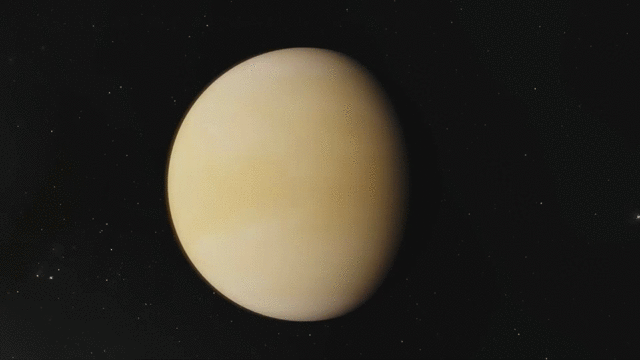
Windgeschwindigkeiten in den oberen Wolkenschichten sind jedoch viel schneller mit 300 km/h. Diese Winde umkreisen den Planeten alle vier Erdtage und lassen ihn so aussehen, als würde er sich schneller drehen.
Orbit & Orientation
Der durchschnittliche Orbit Radius der Venus liegt bei 0,72 AU (108 Millionen Kilometer) , dieser Wert variiert kaum im Verlauf des Orbits und macht Venus den Planeten mit der am wenigsten exzentrischen Umlaufbahn um die Sonne.
Mond & Venus
Bei der nächsten Annäherung der Venus an die Erde, ist Venus mit einer Entfernung von nur 41 Millionen Kilometer der von allen Planeten nächste zu uns.
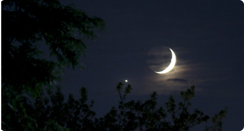
Venus ist außerdem, nach dem Mond, das zweithellste Objekt an unserem Nachthimmel. Deswegen wird Venus auch oft mit etwas Exotischerem wie einem UFO verwechselt.
Rotation
Normalerweise drehen sich alle Planeten gegen den Uhrzeigersinn um ihre eigene Achse, Venus dreht sich jedoch als einziger Planet im Uhrzeigersinn um die eigene Achse. Außerdem dauert eine Umdrehung (siderischer Tag) ganze 243 Erdtage und somit länger als ein Jahr auf der Venus mit 224 Tagen.
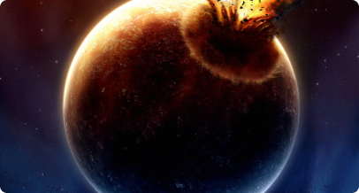
Es ist unklar, warum Venus sich rückwärts rotiert im Vergleich zu den anderen Planeten. Es könnte aber auf einen großen Aufprall mit einem anderen Objekt zurückzuführen sein, welcher so energetisch war, dass sich die Rotation änderte.
Rotationsgeschwindigkeit
Am Äquator befindet sich die Rotationsgeschwindigkeit des Planet bei nur 6,5 km/h. Diese langsame Rotation übt wenig Zentrifugalkraft auf den Planeten aus und macht Venus daher zum zweitkugeligsten Objekt im Sonnensystem, nach der Sonne.
Sonnenverlauf
Wegen der Rotation der Venus dauert ein Tag (Sonnentag) 117 Erdtage und somit viel weniger als eine Rotation um sich selbst (siderischer Tag).
In einem ganzen Venus Jahr erlebt man daher nur knapp unter zwei Sonnentage.
Orbitale Ebene
Die orbitale Ebene der Venus ist um 3,4° geneigt im Vergleich zur Erde.
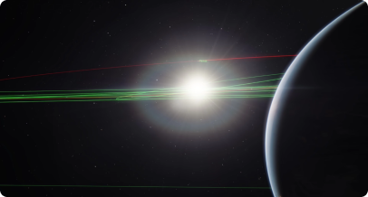
Wegen dieser Neigung sehen wir Venus nur selten zwischen uns und der Sonne. Die letzte „Venusfinsternis“ war 2012, diese passieren immer in Paaren welche 8 Jahre voneinander entfernt sind, die Paare sind aber 100 Jahre voneinander entfernt. Die nächste passiert daher erst wieder im Jahr 2117.